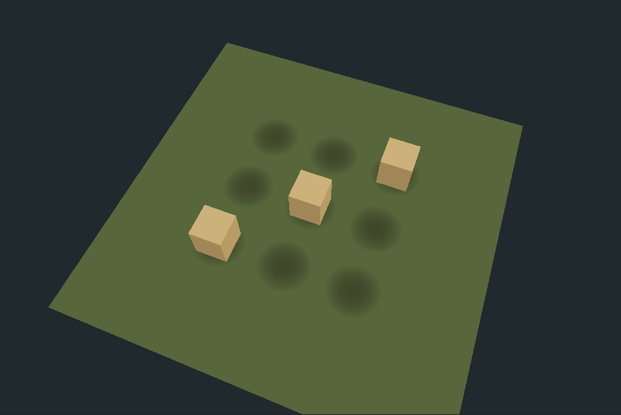
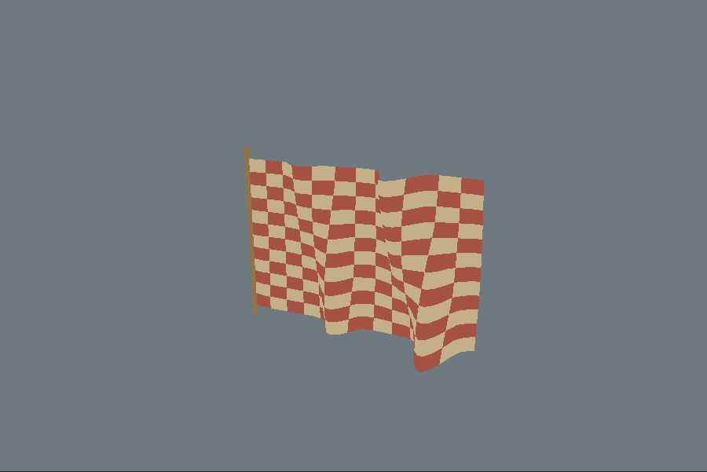

Both candidates reproduce the reference in these focused checks. The useful unification is shared shader logic across the existing raw WebGPU campaign and Three.js battle renderers.
The production camera and depth contract with one-sample rendering. Nine shadow stamps, three occluders. The six unobstructed stamps expose the radial profile.

One flag-wave function reused in raw compute and Three.js. Fixed time: 1.5 seconds. Diagnostic geometry uses stronger wind to expose differences.



Trial TypeGPU for shared functions and typed contracts. Keep frame scheduling in its existing owners. vgpu's pure-function bridge works, but its shared-uniform draw/compute path reproduces a bind-group cache collision in 0.4.1.
These are focused integration tests, not a full-game migration or a performance certification.